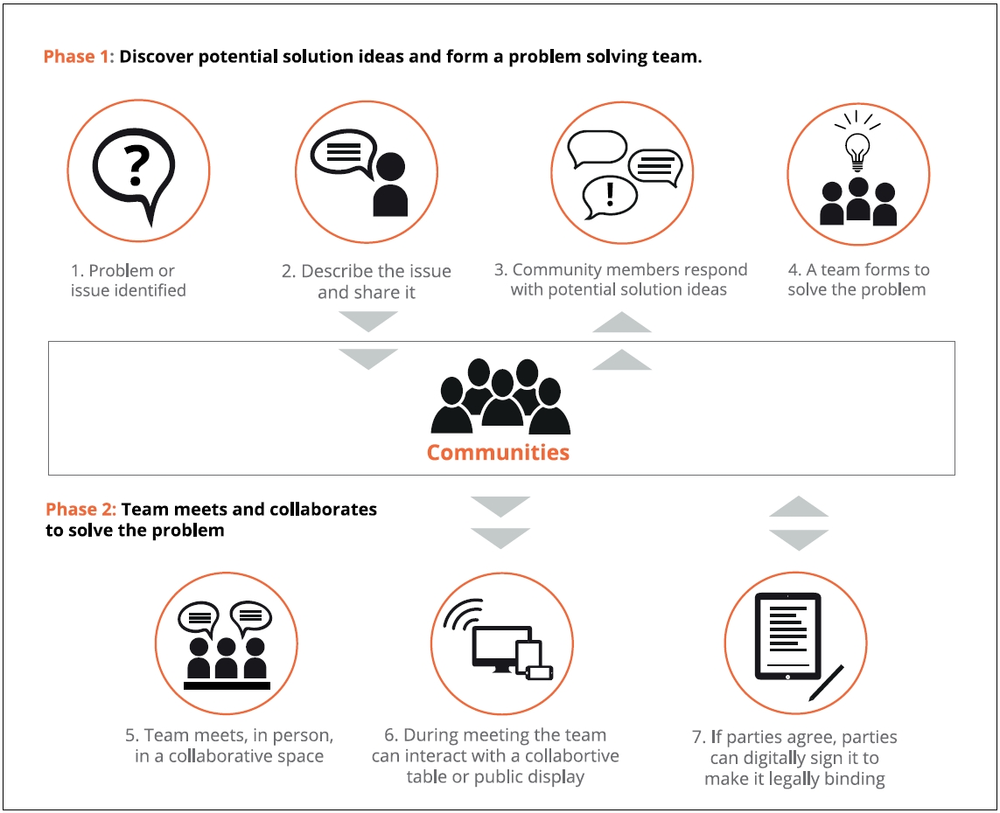

Crowd tasking is a service that helps people solve problems by utilizing the participatory power of a community. It also allows the possibility to collaborate in physical collaboration spaces, to speed problem solving activities. The service allows student and business oriented communities to describe problems, share them with community members and collectively try to solve them.
In a first phase (see figure) the problem is shared with the available communities. Community members are encouraged to provide potential ideas on how sub issues may be solved and teams can be formed based on who can assist or provide a solution for a sub-issue. This team forms its own community. In the second phase, the problem solving team meets physically in dedicated collaboration spaces where they can discuss and solve any sub issues. During these meetings the participants can use their smart phones to interact with other community members: both those present at the meeting and those participating remotely.
The meeting participants can also interact with their immediate surroundings, via their smart phone. For example, a public display and/or collaboration table can be used to show the issue status or the meeting minutes. When a solution for the issue is reached,the business oriented communities can use the “community micro-agreements” functionality offered by SOCIETIES platform to reach legally binding agreements.
User profile information is used to enrich the participants’ profile inside crowd tasking service. Extra information such as interests can provide suggestions on who can help with specific problems or sub-issues.
A crowd tasking end-user (the problem poster) can share a problem with SOCIETIES enabled communities.
Trust information allows the problem poster to form a team with more confidence of success. People can be selected based on the amount of trust other community members have in them.
When meeting in collaborative spaces, location information is used to determine which community members are physically present, and which are participating remotely.
This allows business communities to capture meeting minutes and other meeting agreements in a legally valid and binding manner. The meeting organizer can choose whether the consensus is reached only among participants that are physically present or the entire community.